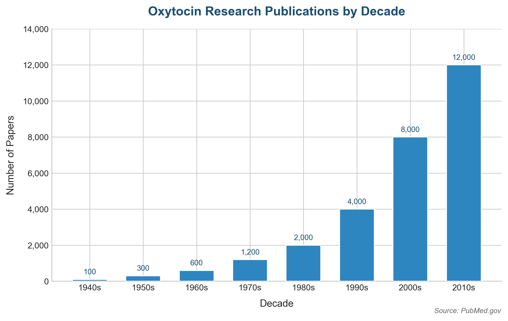

In 1882, eleven residents of Roseto Valfortore — a small village in the Foggia province of Italy — boarded a steamship bound for New York. Eight of them, carrying big dreams, crossed the Atlantic and settled in the Bangor area of Pennsylvania. But what awaited them was not the promised land they had imagined. Earlier waves of Welsh and German immigrants had already staked their claims and were fiercely territorial. Perhaps to escape the collective hostility, four of the group moved to other parts of the United States, and one of them got back on a boat and returned to Roseto, Italy.
The man who returned home was warmly welcomed by his fellow villagers. His dramatic tales of the immigrant experience must have captivated them. His stories of that strange land on the other side of the world traveled from mouth to mouth until they became the stuff of legend, planting the seed of the American Dream in the hearts of the simple, hardworking people of Roseto. Before long, villagers began leaving for America in droves. By 1894, excluding women and young children, some 1,200 residents of Roseto had obtained U.S. passports. Practically the entire village uprooted itself and set sail for the New World.
Upon arriving in unfamiliar America, these immigrants settled near Bangor and built a community of their own, away from the hostility of earlier settlers. They named it "Roseto" — in memory of the hometown they had left behind. It became the first officially recognized Italian immigrant municipality in the United States.
A Heart Doctor Takes Notice
What might have remained an unremarkable immigrant settlement story exploded onto the world stage in 1960, attracting intense international attention. The Roseto story was turned into documentaries in at least four countries. Doctors, sociologists, and psychologists descended on the village. The entire population underwent blood tests, electrocardiograms, questionnaires, and in-depth interviews. The results gave birth to a new term — the "Roseto Effect" — and this tiny immigrant village found itself in the global spotlight.
What was the reason?
It all began with a chance meeting between two physicians: Benjamin Falcone and Stewart Wolf. Dr. Wolf, an internist at an Oklahoma hospital, happened to be vacationing in the area when he met Dr. Falcone, who had been serving as the local doctor in Roseto and Bangor for 17 years. Falcone shared a curious observation: "The people of Roseto die of heart disease before age 65 at a rate far lower than their neighbors in Bangor. Isn't that strange? The two communities are right next to each other, but their life expectancies are worlds apart."
It was the kind of remark that many people might have filed away with a polite "Oh, interesting" and moved on. But Dr. Wolf was intrigued. He secured his own research funding and launched a rigorous investigation.
First, he verified Falcone's claim. He collected local mortality records and analyzed the causes of death for Roseto residents between 1955 and 1961, comparing them with Bangor residents who shared the same water system and healthcare infrastructure. What he found was extraordinary: the rate of death from cardiovascular disease in Roseto was less than half that of Bangor — and less than half the national average across the entire United States. Even more astonishing, virtually no Roseto resident under 65 had died of heart disease. And psychiatric hospital admissions among Roseto's residents were less than half the national average as well.1
Some readers might think: "Well, they were Italian immigrants. They must have been eating a Mediterranean diet, using lots of olive oil, and maintaining a healthy weight." If the answer had been that simple, Roseto would never have attracted the attention it did. Dr. Wolf's findings told the opposite story. Roseto's residents had all the classic risk factors for cardiovascular disease. They ate plenty of meat, didn't exercise, and freely enjoyed alcohol and tobacco. Their blood pressure was no different from the national average. Far from drizzling olive oil on their salads, they cooked with lard. Their blood cholesterol levels were no different from typical Americans.
The genetic hypothesis was an obvious one to consider. Roseto's people had all emigrated from the same Italian village, and most had married within the community — so perhaps they shared a gene pool that happened to protect against cardiovascular disease. To test this, Wolf studied people who had been born in Roseto but moved away as children. Their cardiovascular disease rates and mortality were no different from the American average. Furthermore, their dietary habits, exercise habits, fat intake, smoking habits, and blood cholesterol were identical to those of the Roseto natives who had stayed. Genetics simply couldn't explain it. So what was protecting the people of Roseto?
The answer came from Wolf himself before long. "The most striking thing was that the people of Roseto were enjoying their lives." Roseto's residents lived simple, modest, unpretentious lives. Crime was virtually nonexistent. Those who had more gave freely; those who had less accepted help without shame. In a village of just 2,000 people, there were no fewer than 22 community groups — fishing clubs, hunting clubs, book groups, sports teams. Many households had three generations living under one roof, and the village frequently held communal celebrations. They lived like one extended family. Wolf's conclusion: it was this tight-knit social fabric that lowered the residents' cardiovascular risk and created an environment for longevity.
Why the Roseto Effect Disappeared
Are the people of Roseto still living heart-disease-free lives today? Sadly, no. Dr. Wolf followed the residents for 25 more years and published his results in 1989. The opening line of his conclusion reads: "The most remarkable social change was the emergence of 'ostentation' — something long considered taboo in Roseto. The people had believed that showing off attracted the devil's attention, but the younger generation began to abandon this belief and competitively flaunt their wealth. They drove expensive cars for all to see, and a culture of petty comparison and competition took root."
Young people born in Roseto left to find work elsewhere. Newcomers moved in to take their places. The once tight-knit community culture evaporated. As a result, Roseto became just another town, indistinguishable from Bangor next door. Once the distinctive character of Roseto vanished, so did the difference in cardiovascular mortality. The Roseto Effect disappeared from the face of the earth.2
In recent decades, as obesity rates have climbed, diabetes, cardiovascular disease, and above all cancer have surged at an alarming pace. Deaths from infectious diseases like pneumonia have declined, while deaths from metabolic and lifestyle diseases now account for more than 67 percent of all mortality. In this landscape, what should we focus on to live longer and healthier? Perhaps it isn't just exercise and diet — perhaps meeting family and friends more often, maintaining strong social connections, and building good relationships with those around us matters just as much, if not more.3
Reading about Roseto, I couldn't help thinking: "Wait — this sounds exactly like the village where I grew up." Everyone was poor and life was hard, but through cooperative farming traditions like dure and pumasi — think of them as Korean versions of communal barn-raising — people shared whatever they had, even if it was just half a soybean, treating each other like family, like brothers and sisters. Neighbors knew exactly how many spoons and chopsticks were in each other's kitchens. When something bad happened to a neighbor, everyone cried together. When something good happened, they celebrated as if it were their own joy. At weddings and funerals, the entire village pitched in. Fathers would fuss over the ceremonial offerings for a neighbor's ancestral rite as if it were their own family's occasion. Mothers would set up giant cauldrons in the yard and cook enormous batches of noodles to feed everyone.
But somewhere along the way, it became rare for three generations to gather for holidays. Village paths were cut through by straight, paved roads, and homes were walled off behind tall fences. Now people bolt their doors, stay inside, and skip the communal events. Adult children leave for Seoul as if by unspoken agreement, leaving behind only the gray-haired generation to sit on empty verandas. The same thing has happened at work — the communal workplace culture has eroded. Even meetings that used to be held face-to-face have gone virtual, and there are fewer and fewer occasions to see people in daily life. Forget company dinners — even being with just one other person feels like a burden. Living alone, drinking alone, "I'm fine on my own" has become a competitive performance. Turn on the TV, and variety shows portray solo living as the perfectly normal modern lifestyle.
Is it any wonder, then, that schizophrenia, depression, bipolar disorder, and other mental illnesses have surged? Suicide rates have become impossible to ignore. South Korea holds the grim distinction of having the highest suicide rate among all OECD nations. As of 2022, Korea's suicide rate stood at 26 per 100,000 people — 2.4 times the OECD average of 11. Tracing the statistics, Korea's suicide rate began climbing steadily in the early 1990s, peaking at 31.7 per 100,000 in 2011. As the country rode the "Miracle on the Han River" through breakneck industrialization and modernization, every citizen was swept into a relentless race of competition. Is there any solution?
From this perspective, could the "social hormone" oxytocin hold an answer for us? Some readers may be thinking: "Oxytocin? The one that surges during childbirth and sex? How on earth could that hormone hold the key to our health and our future?" I used to think the same way. Perhaps what Dr. Wolf identified in the 1960s — comparing the old Roseto with the new Roseto and with mainstream American society, framing it as "competition versus cooperation" in his book The Power of Clan: The Influence of Human Relationships on Heart Disease — was only the tip of the iceberg. Now, let's step into the world of oxytocin.